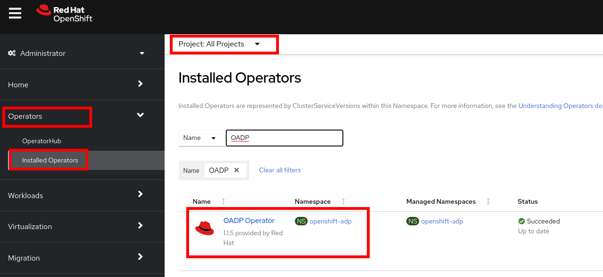
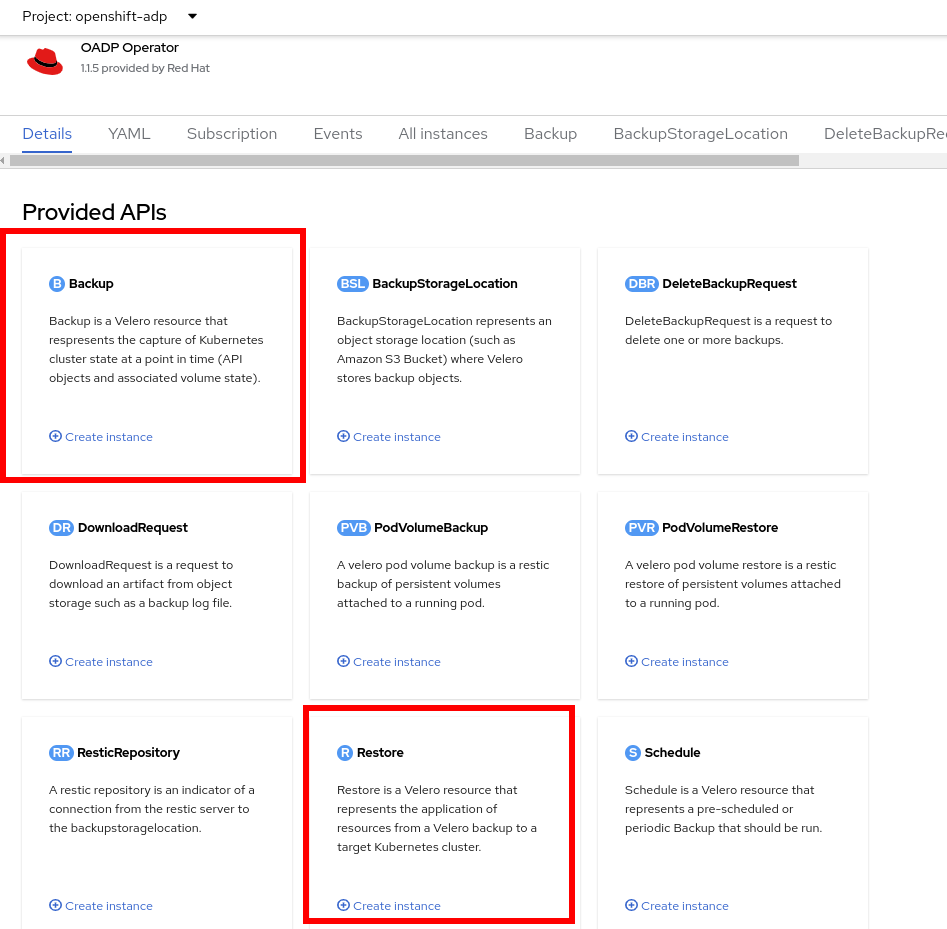
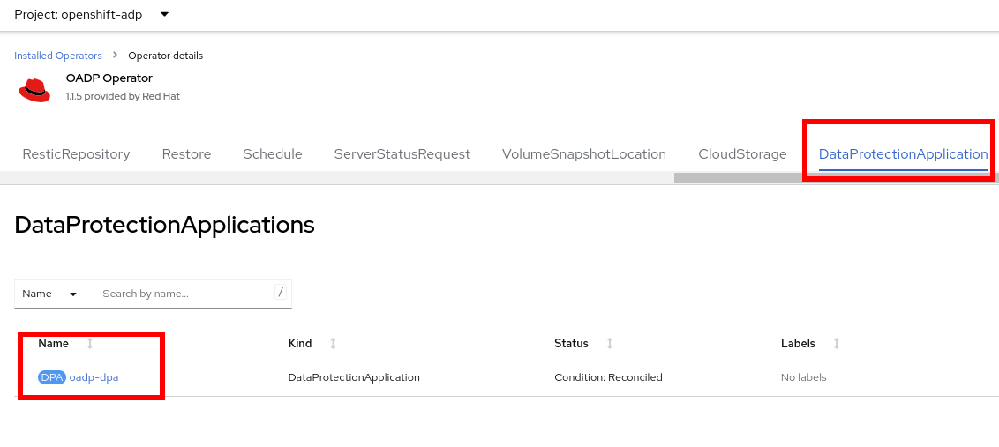
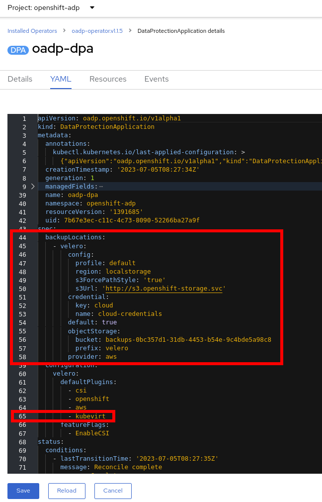
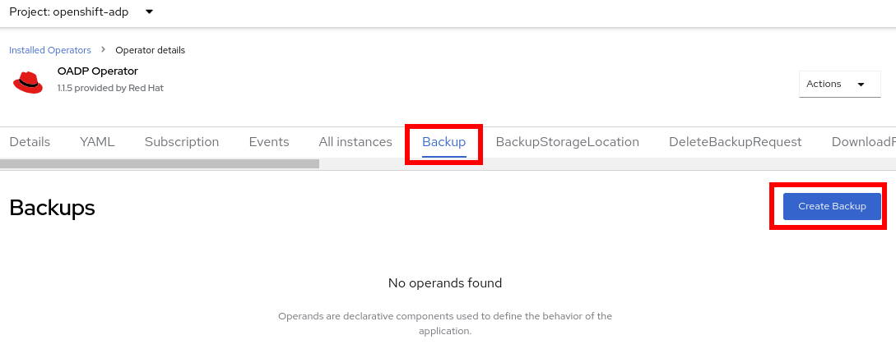
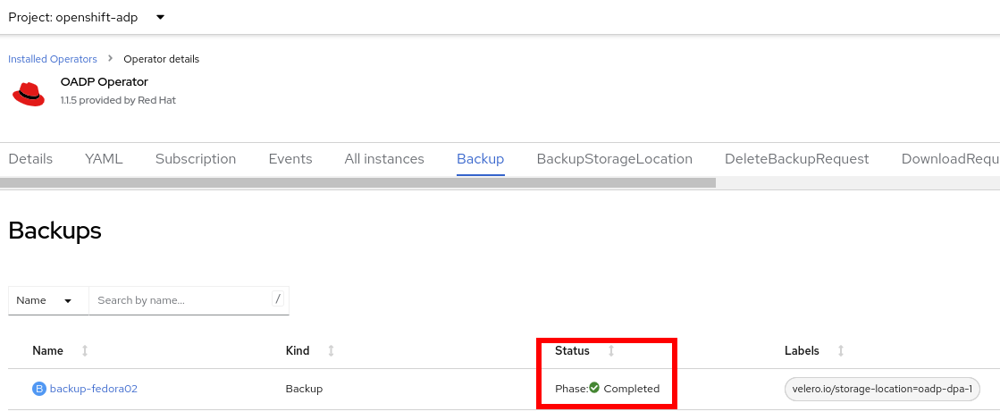
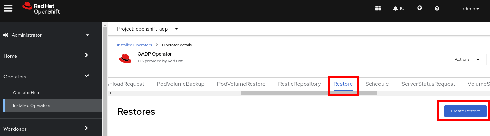
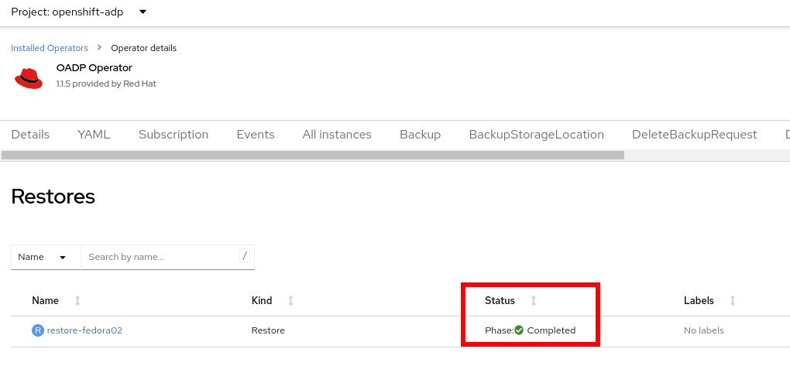
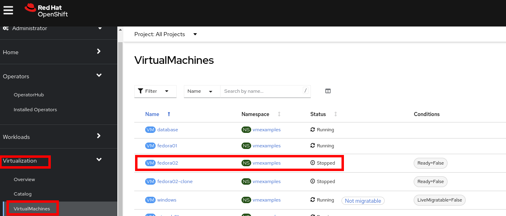

Optional: Backup and Restore
Introduction
There are multiple options for backup and restore of virtual machines with OpenShift Virtualization.
-
OADP (OpenShift APIs for Data Protection): A Red Hat Operator which provides a storage agnostic method to back up and restore OpenShift objects, including virtual machines.
Additionally, many storage partners offer the ability to protect virtual machine disks using their native technology. Be sure to check with your storage and backup vendor(s) to determine compatibility with OpenShift Virtualization.
This lab will use OADP to perform a virtual machine backup and restore.
-
Review Operator
-
Perform a backup
-
Perform a restore
Review Operator
-
Navigate in the left menu to Operators → Installed Operators and ensure that
All projectsis selected. SelectOADP Operator. -
Review the Provided APIs available. In this module, the
BackupandRestorefunctions will be used. -
Navigate to the tab DataProtectionApplication. This object represents the configuration of the deployed OADP instance.
 -
Select
oadp-dpaand review the YAML definitionNotice that OADP has been configured by adding the
kubevirtplugin and it has been configured to use the internal object storage bucket provided by Red Hat Storage.In a production environment you would want to backup to an external storage system, however, in this lab, we are using internal object storage for the sake of convenience.
Create a backup
You will perform a backup of the VM fedora02. The selection of the objects to be backed up is defined by the labels app and vm.kubevirt.io/name. This includes the VM definition, disks, and additional objects being used by the virtual machine such as config maps and secrets.
-
Go back one screen to the main Operator page by clicking on the Operator name
-
Navigate to the Backup tab and press Create Backup
 -
Switch to the YAML view and replace the content with the following one:
apiVersion: velero.io/v1 kind: Backup metadata: name: backup-fedora02 labels: velero.io/storage-location: default namespace: openshift-adp spec: hooks: {} orLabelSelectors: - matchLabels: app: fedora02 - matchLabels: vm.kubevirt.io/name: fedora02 includedNamespaces: - vmexamples storageLocation: oadp-dpa-1 ttl: 720h0m0sNotice that the content of this YAML indicates that any object with the labels
app: fedora02in the namespacevmexampleswill be backed up to the location specified in theDataProtectionApplicationconfiguration.ImportantIf you do not have the fedora02VM, change the label selectors in the YAML above to match a virtual machine in your environment. -
Wait till the
Statuscolumn changes toCompleted. This indicates that the virtual machine has been successfully backed up.
Restore a backup
-
Navigate to Virtualization → VirtualMachines and delete the VM
fedora02. -
Go back to Operators → Installed Operators and select OADP Operator.
-
Switch to the Restore tab and press Create Restore
 -
Switch to the YAML view and replace the content with the following one:
apiVersion: velero.io/v1 kind: Restore metadata: name: restore-fedora02 namespace: openshift-adp spec: backupName: backup-fedora02 includedResources: [] excludedResources: - nodes - events - events.events.k8s.io - backups.velero.io - restores.velero.io restorePVs: true -
Wait till the
Statuscolumn changes toCompleted. -
Navigate back to Virtualization → Virtual Machines and ensure the
fedora02was restored.
Summary
Protecting virtual machines is a critical aspect of a virtualization platform. OpenShift Virtualization provides multiple methods that enable native protection, for example using OADP, or allowing storage and backup partners to integrate their offerings. If you have questions about how to protect virtual machines, please don’t hesitate to ask the proctors for the workshop or reach out to your vendor to determine their compatibility with OpenShift Virtualization.